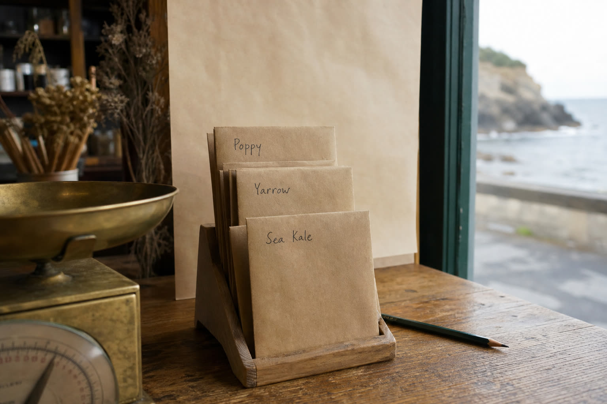

Drawer 02 / coastside seed
Paper folds.
Names in pencil.
Collected dry. Cleaned over a sheet. Kept in kraft until the coast gives a still day.

Fog at the glass.
Packets kept inland.
Packet ledger
Three kept close.
No price marks here. Ask what is on the table.
A–01
Poppy
Eschscholzia californicaCoastside bluff
Dry capsule
Split by hand over paper. The seed is kept only after the capsule loses its green.
Wait for a still day.
A–02
Yarrow
Achillea millefoliumPrairie edge
Dry flower head
Small, grey, and a little sharp. Shake the head onto the work sheet, then crease the packet once.
Fold once, label twice.
A–03
Sea kale
Crambe maritimaStrand plant
Coastal brassica
Round seed in the same kraft as the others. Kept clear of salt air and the damp edge of the table.
Keep the packet dry.